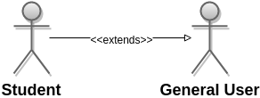
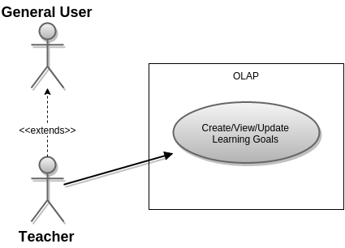
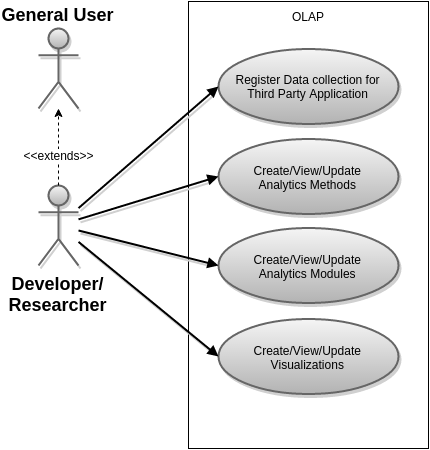
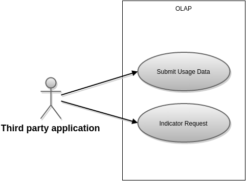

SYSTEM OVERVIEW
Open Learning Analytics Platform (OpenLAP)
The Open Learning Analytics Platform (OpenLAP) of the RWTH is a project which objective is to provide an ecosystem for Learning Analytics for different stakeholders. The platform will gather data from multiple sources, utilize different methods and apply them to provide insight on the data to the users (Learners, Teachers and Researchers/Developers).
The main users of the project are:
- Students: Will utilize the data to provide themselves with insight on course performance, comparison with other students and/or cohorts, receive recommendations on learning materials and subjects, revise achievements and goals in courses and education process. The student will be able to create inquiries and utilize available data from different sources to approach answers to these inquiries.
- Teachers: Uses the OpenLAP as a complement of the Learning Management Systems. Utilizes data visualization of the OpenLAP to personalize dashboards with information about student performance, comparison with cohorts, monitoring of activity.
- Developers/Researchers: Can create new Analytics Methods and Analytics Goals in the Analytics Modules in order to provide other users new ways of making sense of data and mechanisms to process the data. Can also provide new ways of visualizing the data. Can develop descriptive and predictive models for data analysis as Analytic Methods. Can create modules for the collection of data from third party applications and integrate those modules on the platform. Can use the platform to create custom indicators and provide insight to particular research inquiries.
- Administrators: Administrators an perform operations over the administrative and non-functional aspects of the OpenLAP. Maintains the platform, solves issues and allows new Analytics Modules to be used by the users. Has complete access to the functionalities of the OpenLAP.
Functional Requirements
The functional requirements are gathered in base of three main scenarios that derive the main functionalities of the system. The scenarios will be treated as the main Use Cases of the system and will be presented here as such, since they will be the main drivers of the OpenLAP architecture.
SCENARIOS
The scenarios are taken from section 4.2 and section 4.4 of the paper Toward an open learning analytics ecosystem (Chatti et. al.). They represent the main usage of the system. They are divided by Teacher, Student and Developer/Researcher Scenarios with the addition of two more: the general use scenarios New Indicator Generation and a system interaction scenario Indicator Data Request.
User Scenarios
User scenarios desrcive those that are executed directly by users of the OpenLAP. They must interact directly with the platform in order to realize this scenarios.
Teacher Scenario
A teacher utilizes an external LMS system to administer courses. The teacher has access to a personalized dashboard of the OpenLAP and from it it can see an overview of courses with certain indicators. The indicators are the main information source to improve teaching. The dashboard provides predefined indicators. Examples of the indicators include: involvement of students on forums, participation of students in course, document usage statistics, progress of students on assignments, learning materials discussed in forums. The teacher can also create new indicators from an indicator editor from which can specify which indicator to use and what visualization to apply to the indicator. The creation of indicators is made available to other users.
Student Scenario
Uses the OpenLAP system to collect data from the university's Learning Management System, MOOCs, Blogs, Social Networks, YouTube, and forums. The student can also chose which activities are collected by the OpenLAP. Data privacy is paramount and by default the student is the only user with access to the collected data. The student can choose what data is public and for how long.
Developer Scenario
Developers and Researchers can develop and register third party application data collection to the OpenLAP. The applications can upload the data to the OpenLAP through a well defined framework. Developers and researchers can as well submit visualization techniques to the platform and these are made available to other users to utilize on their inquiries. Similarly, they can register, through an API, different Analytics Methods to analyze the data and these will be made available to all users. The developer or researcher can also create indicators or use existing ones.
System Scenarios
This scenarios are not directly related to any particular user and can be either performed by any user directly.
New Indicator Generation Scenario
As part of a general user scenario, the New Indicator Generation scenario is available to all registered users of the platform and illustrates one of the most common usages of the OpenLAP. The user selects a goal and enters a question in the question / indicator editor. The OpenLAP system has a component which analyzes the question and suggests similar questions (the question / indicators / metrics component). If the user selects one of the suggested questions, the question / indicator editor will allow the user to select indicators for the question. On the other case if the user creates a new question, the indicators are made available and the user can select which ones to associate to the new question or generate new indicators. When the user selects existing indicators, the OpenLAP makes suggestions of instances of the indicator. The user can select those instances or create a new instance with different method and visualization techniques. Then within the Question / Indicator editor, the user is presented with the visualization code to be rendered. If the user is satisfied, they can use the code to embed it in any application.
Indicator Data Request Scenario
This scenario involves a third party application making a request to obtain visual data from the OpenLAP. The purpose of it is twofold: to illustrate the interaction of an external system with the OpenLAP and to expose some of the inner workings of the OpenLAP, for this reason, the description of this particular scenario goes beyond only the interactions of the external system with the OpenLAP. In this scenario an indicator request is sent to the OpenLAP from the third party application. The OpenLAP verifies the validity of the request and proceeds as follows:
- The Analytics Engine obtains the indicator reference from the Analytics Modules which contains the Indicator reference, the Analytics Method used, and the particular visualization for the indicator. This grouping of Indicator, Analytics Method and Visualization (along with the mappings of the inputs/outputs) is referred to as a Triad.
- The Analytics Engine obtains the query from the question / indicators / metrics component (Indicator Engine).
- The Analytics Engine executes the query to the Data Collection and Data Store component.
- The Analytics Engine uses the Analytics Method to perform data analysis.
- The Analytics Engine sends transformed data to the Visualizer component.
- The Visualizer transforms data to a visualization form and returns code for visualization, which is delivered by the Analytics Engine.
USE CASE DIAGRAMS
From the previous scenarios, the following use case diagrams can be derived. They cover most of the main functionalities of the system and are created to provide a complete coverage of the scenarios described above.
General User
- View/Modify Dashboard: The user can see the result of executing the Triads associated with saved indicators on a Dashboard. The user saves the code for Viewing the Triad Execution. Modifying the dashboard implies adding, or removing indicators from it.
- Associate Indicator to Question: A user must associate a question to a set of indicators. to answer the question which can be an existing Indicator, a template from an existing Indicator or a new Indicator.
- Create Question: Users can create new questions into the OpenLAP system and obtain the view of the execution of the Triad that gets generated by passing the data of an Indicator to an Analytics Method and visualizing with with a particular Technique of the Visualizer.
- Generate Indicator: Allows to create a new Indicator from the Rules Engine and the data available.
- Generate Triad: Once an Indicator has been Generated, the User can associate the Indicator with an Analytics Method to analyze the obtained data of the Indicator. The Indicator can also be associated to a visualization technique to obtain a visualization of the data. The grouping of the Indicator/Analytics Method/Visualization along with the configuration of the Indicator and Analytics Methods inputs and outputs is called a Triad.
- View Triad Execution: The triad can be executed once it has been generated. The triad will use the Indicator data on the Analytics Method selected and visualize it with the Visualization technique selected using the mapping configuration saved along with the Triad.
- Request Creation / View Analytics Goals: Users can create/Modify/View Analytics Goals (also referred as Analytics Modules). The Administrator allows an Analytics Goal to be used bu other users.
- Administer Data Collection and Data Availability: Users can add, modify or remove data collection from third party applications as well as administer who is able to see their collected data and for how long. The Use Case Diagram illustrates the General User Use Cases.

Student
For the main scenarios, the Student will be able to perform the same Use Cases as a general user. The difference with other actors is the particular data that the student has access to, but this is independent of the Use Cases themselves.
The Use Cases Diagram is shown in the figure.

Teacher
Similar to the Student, for the main scenarios, the Teacher will be able to perform the same Use Cases as a general user. The difference with other actors is the particular data that the teacher has access to, but this is independent of the Use Cases themselves. Additionally, the Teacher is able to classify the Analytics Methods into Analytics Goals whenever she or he determines that it is relevant for a particular Analytics goal.
The Use Cases Diagram is shown in the figure.

Developer/Researcher
In addition to the General User Use Cases, the Researcher/Developer can:
- Register Data collection for Third Party Application: This Use Case corresponds to the Developer/Researcher Scenario, where a Developer/Researcher submits a mechanism to collect data for a Third Party Application. This is only the registration of a service account and the purpose of registering the external application is to obtain authorization to collect the data.
- Create/View/Update Analytics Methods: For the Developer/Researcher Scenario, the Developer/Researcher can create (and modify) new Analytics methods in order to process the data within the OpenLAP.
- Create/View/Update Visualizations: Finally, the Developer/Researcher Scenario describes a mechanism for using a customized Visualization for an indicator. The visualization is developed by this user and submitted to the OpenLAP.
The figure below illustrates this in a Use Case Diagram.

Administrator
Administrators have access to all the functionalities of the OpenLAP. Additionally, they are initially the only users that can authorize Analytics Goals. Analytics Methods can only be related to authorized Analytics Goals.
The figure below illustrates this in a Use Case Diagram.

Third Party Application
- Submit Usage Data: This is implied on the Student Scenario and the Developer Scenario where a Third Party Application sends data to the OpenLAP.
These are illustrated in the figure as a Use Case Diagram.

USE CASE SPECIFICATIONS
This subsection will present a Use Case Specification Table for each of the Use Cases depicted in the Use Case Diagrams of the previous subsection. This will allows a more comprehensive description of each of the Use Cases and will also assign a number to each one. This information is the basis of the Architecture presented in the rest of this documentation.
The naming convention for the Use Cases is: OpenLAP_SUC_[Number], where SUC stands for Scenario Use Case (for the main scenarios, other additional Use Cases developed should use UC instead.
OpenLAP_SUC_01: View/Modify Dashboard
| Use Case Element | Description |
| Use Case Number | OpenLAP_SUC_01 |
| Use Case Name | View/Modify Dashboard |
| Use Case Description | The user can see the result of executing the Triads associated with saved indicators on a Dashboard. The user saves the code for Viewing the Triad Execution. The user can modify the dashboard by adding or removing indicators from it. |
| Primary Actor | General User |
| Precondition | The user exists and is logged into the OpenLAP system. |
| Basic Flow |
|
| Alternate Flow: Adding an indicator to the Dashboard |
|
| Alternate Flows: Remove Indicator from Dashboard | This flow is triggered when the user selects to remove one Indicator from the Dashboard instead of Selection the option to add a new Indicator to the Dashboard.
|
OpenLAP_SUC_02: Create Question
|
Use Case Element |
Description |
|
Use Case Number |
OpenLAP_SUC_02 |
|
Use Case Name |
General User General Create Question |
|
Use Case Description |
The user can create new questions into the OpenLAP system and obtain the view of the execution of the Triad that gets generated by passing the data of an Indicator to an Analytics Method and visualizing with with a particular technique of the Visualizer. |
|
Primary Actor |
General User |
|
Precondition |
The user exists and is logged into the OpenLAP system. The user is in the Questions / Indicator Editor. |
|
Basic Flow |
|
|
Alternate Flows: The user selects to Create a Question. |
This flow triggers at The OpenLAP system suggest similar questions related to the entered question and an option to create a new question.
|
OpenLAP_SUC_03: Associate Indicator to Question
| Use Case Element | Description |
| Use Case Number | OpenLAP_SUC_03 |
| Use Case Name | Associate Indicator to Question |
| Use Case Description | The user must associate a question to a set of indicators to answer the question which can be an existing Indicator, a template from an existing Indicator or a new Indicator. |
| Primary Actor | General User |
| Precondition | The user exists and is logged into the OpenLAP system. A new Question is being created in the Question/Indicator editor. |
| Basic Flow |
|
| Alternate Flows: Use existing Indicator as Template | This Flow is triggered when the user selects to use an Indicator as a Template in the basic flow. |
| Alternate Flows: Create Indicator | This alternate flow is show in OpenLAP_SUC_04: Generate Indicator |
OpenLAP_SUC_04: Generate Indicator
| Use Case Element | Description |
| Use Case Number | OpenLAP_SUC_04 |
| Use Case Name | Generate Indicator |
| Use Case Description | The user creates a new Indicator from the Rules Engine and the data available.. |
| Primary Actor | General User |
| Precondition | The user exists and is logged into the OpenLAP system. The user is in the Indicator Generator and has selected to Generate an Indicator. |
| Basic Flow |
|
| Alternate Flows | N/A |
OpenLAP_SUC_05: Generate Triad
| Use Case Element | Description |
| Use Case Number | OpenLAP_SUC_05 |
| Use Case Name | Generate Triad |
| Use Case Description | Once an Indicator has been Generated, the User can associate the Indicator with an Analytics Module to analyze the obtained data of the Indicator. The Indicator can also be associated to a visualization technique to obtain a visualization of the data. The grouping of the Indicator/Analytics Method/Visualization is called a Triad. |
| Primary Actor | General User |
| Precondition | The user exists and is logged into the OpenLAP system. At least an Indicator exist and has been selected. There exists at least an Analytics Method and a Visualization on the OpenLAP system. |
| Basic Flow |
|
| Alternate Flow: Mapping Error | This alternate flow is triggered if either the mapping of the fields from the Indicator Data to the Analytics Method or from the Analytics Method to the Visualization technique are not valid. |
OpenLAP_SUC_06: View Triad Execution
| Use Case Element | Description |
| Use Case Number | OpenLAP_SUC_06 |
| Use Case Name | View Triad Execution |
| Use Case Description | The user can submit a Triad for execution once it has been generated. The triad will use the Indicator data on the Analytics Method selected and visualize it with the Visualization technique selected using the mapping configuration saved along with the Triad. |
| Primary Actor | General User |
| Precondition | The Triad exists in the OpenLAP system. There is a secure connection between the OpenLAP system and the Third Party Application. |
| Basic Flow |
|
| Alternate Flows | N/A |
OpenLAP_SUC_07: Administer Data Collection and Data Availability
| Use Case Element | Description |
| Use Case Number | OpenLAP_SUC_07 |
| Use Case Name | Administer Data Collection |
| Use Case Description | The User can add, modify or remove Data Collection from external source or application. |
| Primary Actor | General User |
| Precondition | The user exists and is logged into the OpenLAP system. The user is in the interface for Administering the Data Collection from external sources or applications. For modifying and removing the Data Collection of an external source or application, the data collection must already be set up for the user. For adding the Data Collection of an external source or application, the module that allows the external source or application Data collection must exist in the system. |
| Basic Flow: Adding Data Collection from external source or application. |
|
| Alternate Flows: Modifying/Deactivating Data Collection of an external source or application. | This Flow is triggered if the user selects to Modify an existing Data Collection from external source or application.
|
| Alternate Flow: Removing Data Collection of an external source or application. | This Flow is triggered if the user selects to Remove an existing Data Collection from external source or application.
|
OpenLAP_SUC_08: Request Creation/View Analytics Goals
| Use Case Element | Description |
| Use Case Number | OpenLAP_SUC_08 |
| Use Case Name | Request Creation/View Analytics Goals |
| Use Case Description | The User can create/Modify/View Analytics Goals (also referred as Analytics Modules). The Administrator allows an Analytics Goal to be used by other users. |
| Primary Actor | General Users |
| Precondition | The User is logged into the system and is on a view to create and update Analytics Goals. For associating Analytics Methods to Analytics Goals, both the Analytics Goal and the Analytics Method must exist. The association can only be done by the Developer/Researcher that updated the Analytics Method or by Administrators |
| Basic Flow: Creation of a Analytics Goal |
|
| Alternate Flow: Adding Analytics Method to a Analytics Goal |
This scenario can only be done by the Developer/Researcher that updated the Analytics Method or by Administrators. The Analytics Goals can have Analytics Methods attached so they are suggested when generating Triads depending on the Analytics Goal that was chosen there, if any. Otherwise the Triad will show all the possible Analytics Methods with no preferences.
|
OpenLAP_SUC_09: Register Data collection for Third Party Application
| Use Case Element | Description |
| Use Case Number | OpenLAP_SUC_09 |
| Use Case Name | Register Data collection for Third Party Application |
| Use Case Description | The Developer/Researcher submits a mechanism to collect data for a Third Party Application. This is only the registration of a service account and the purpose of registering the external application is to obtain authorization to collect the data. |
| Primary Actor | Developer/Researcher |
| Precondition | The user exists and is logged into the OpenLAP system. The User is additionally a Developer/Researcher and has permissions to submit Data collection for third party applications. An external service that sends data from an external source or application exists and complies with a data Collection API for the OpenLAP system. The Developer/Researcher is in the interface for registration of Data Collection Applications. |
| Basic Flow: Register Data Collection Third Party Application |
|
| Alternate Flows: Modification of Authorization for Data Collection Third Party Application |
|
OpenLAP_SUC_10: Create/View/Update Analytics Methods
| Use Case Element | Description |
| Use Case Number | OpenLAP_SUC_10 |
| Use Case Name | Create/View/Update Analytics Methods |
| Use Case Description | The Developer/Researcher can implement an Analytics Method using the OpenLAP Analytics Method Framework and submit it to the OpenLAP in order to allow users of the system to use them as Analytics Methods when processing Indicators. |
| Primary Actor | Developer/Researcher |
| Precondition | The Developer/Researcher has a private/public key to sign the JAR file to sign the submission of Analytics Method JARs, this public/private key can be generated by the user in the corresponding Alternate Flow for this Use Case. The package to be submitted complies with the Modularity Framework for the OpenLAP system. The Developer/Researcher is logged into the system and is on the Analytics Method submission panel. |
| Basic Flow: Uploading a Descriptive Analytics Method |
|
| Alternate Flow: Predictive Model Method submission. | This flow is triggered if the user selects to submit a Predictive Analytics Method.
|
| Alternate Flow: Generation of Public/Private key pair for submission of Analytics Methods. | This flow is triggered when the Developer/Researcher selects to generate a new public/private key pair for submission of Analytics Methods.
|
| Alternate Flow: Update Method | This flow is triggered when the Developer/Researcher selects to Update an existing Analytics Method.
|
| Alternate Flow: Error submitting method (invalid signature, invalid PMML file, Analytics Method already exists) | This flow is triggered if either the signature used for the submitted files is not recognized by the system or the PMML file submitted for a Predictive Analytics Method is not valid or the Analytics Method already exists.
|
OpenLAP_SUC_11: Create/View/Update Visualizations
| Use Case Element | Description |
| Use Case Number | OpenLAP_SUC_11 |
| Use Case Name | Create/View/Update Visualizations |
| Use Case Description | The Developer/Researcher can implement a visualization technique using the OpenLAP Visualization Framework and submit it to the OpenLAP in order to allow users of the system to use them as Visualization technique when processing Indicators. |
| Primary Actor | Developer/Researcher |
| Precondition | The Developer/Researcher has a private/public key to sign the JAR file to sign the submission of Visualization frameworks JARS, this public/private key can be generated by the user in the corresponding Alternate Flow for this Use Case. The package to be submitted complies with the Modularity Framework for the OpenLAP system. The Developer/Researcher is logged into the system and is on the Visualization framework submission panel. |
| Basic Flow |
|
| Alternate Flows:Generation of Public/Private key pair for submission of Visualization frameworks | This flow is triggered when the Developer/Researcher selects to generate a new public/private key pair for submission of Visualization frameworks.
|
| Alternate Flows: Updating existing/Uploading new visualization techniques for existing Visualization frameworks | This flow is triggered when the Developer/Researcher selects to Update an existing Visualization technique of a framework known to the Visualizer system.
|
OpenLAP_SUC_12: Submit Usage Data
| Use Case Element | Description |
| Use Case Number | OpenLAP_SUC_12 |
| Use Case Name | Usage Data |
| Use Case Description | When a Developer/researches has registered a third party has been registered as a data collector, it can use the OpenLAP in order to submit data to the platform. |
| Primary Actor | Third Party Application |
| Precondition | The Data collection for the Third Party Application must be registered and it must be active. Additionally, it must have access to the private/public key pair and must be able to make the submission requests through the provided API. There is a secure connection between the OpenLAP system and the Third Party Application. |
| Basic Flow |
|
| Alternate Flows: Erroneous DataSet sent or invalid signature. | This Scenario triggers if the request of the Third Party Application is not well formed or has incorrect data or if the data is signed with an unknown private key.
|
Non-Functional Requirements
- Data Aggregation and Integration: The system should be able to aggregate raw data from heterogeneous sources and different formats.
- Interoperability: Reduce heterogeneity of data to increase interoperability (exchange of information or use information exchanged). It's main usage is for comparison and generalization.
- Specifications and Standards: The system must adopt standards to support interoperability of data and services. Standards include data exchange, models and methods, logging, assessment and privacy.
- Reusability: In order to along itself with the "Open" principles, the system should be able to "reuse, redistribute, revise, remix" components when it is sensible to do so. The use of (open) standards should support this requirement.
- Modularity: The system's architecture should allow for easy integration of components by different developers and allow changes to be made. The platform should have a modular service-oriented approach for easy adaptability.
- Flexibility and Extensibility: The system should be extensible to use new blends of techniques and tools to get information from the available data.
- Performance and Scalability: The system must allow incremental extension of data volume and functionalities. Use big data solutions like MapReduce and NoSQL.
- Usability: The system must integrate GUI design patterns and use appropriate visualizations for better understanding information.
- Privacy: The system must be built always with privacy in mind.
- Transparency: The system must allow users to see that data is not used in unintended ways. Documentation must reflect innards, state how long is data available and who can access as well of what methods are used on the data.
- Personalization: The system must allow different stakeholders to tailor the OpenLAP to their needs.